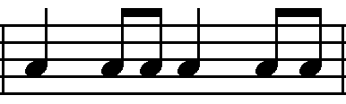

Симфоническое творчество Бородина
Заслуги Бородина как симфониста огромны: он основоположник эпического симфонизма в русской музыке и вместе с Чайковским – создатель русской классической симфонии. Сам композитор отмечал, что его «тянет к симфоническим формам». Причем, члены «Могучей кучки» во главе со Стасовым пропагандировали картинно-сюжетный, программный тип симфонической музыки берлиозовского типа или глинкинского образца; классический же 4-хчастный сонатно-симфонический тип считали «ожившим».
Бородин отдал дань этой позиции в своих критических статьях и в симфонической картине «В Средней Азии» – единственном программном симфоническом произведении. Но больше он склонялся к «чистому» симфоническому циклу, о чем свидетельствуют три его симфонии (последняя не окончена). Стасов сожалел об этом: «Бородин не пожелал стать на сторону коренных новаторов». Однако Бородин дал настолько своеобразную трактовку традиционной симфонии, что оказался в этом жанре еще большим новатором, чем иные «ниспровергатели».
Творческую зрелость Бородина-симфониста ознаменовала 2-я симфония. Годы ее написания (1869-1876) совпадают со временем работы над «Князем Игорем» [1]. Эти два произведения близки; их роднит круг идей и образов: воспевание патриотизма, мощи русского народа, его духовного величия, изображение его в борьбе и мирной жизни, а также – картины Востока и образы природы.
«Богатырская» симфония
Название «Богатырская» симфонии дал В. Стасов, утверждавший: «Сам Бородин мне рассказывал, что в адажио он желал нарисовать фигуру Баяна, в первой части – собрание русских богатырей, в финале – сцену богатырского пира при звуке гуслей, при ликовании великой народной толпы». Обнародованная уже после смерти Бородина, эта программа, однако, не может считаться авторской.
«Богатырская» стала классическим образцом эпического симфонизма. Каждая из ее четырех частей представляет определенный ракурс действительности, вместе создавая целостную картину мира. В первой части мир представлен как героика, в скерцо – мир как игра, в медленной части – мир как лирика и драма, в финале – мир как общая идея.
Первая часть
Героическое начало наиболее полно воплощено в I части, написанной в форме сонатного Allegro (h-moll). Ее быстрый темп опровергает один из устойчивых мифов, связанных с музыкальным эпосом (о господстве замедленного движения). В могучих унисонах начальных тактов, с их нисходящими «тяжелыми» терциями и квартой, возникает образ богатырской силы. Настойчивые повторы, характерные для эпического сказа, упор на тонику, энергичная «раскачка» сообщают музыке монолитную устойчивость. Тема рождает самые разные аллюзии – от суровых былинных напевов и бурлацкой песни «Эй, ухнем» до совсем неожиданной параллели с началом Es-dur’ного концерта Листа [2]. В ладовом отношении она чрезвычайно интересна: в ней чувствуется и переменность тонической терции, и краска фригийского лада с низкой IV ступенью [3].
Вторым элементом главной темы (Animato assai) являются плясовые наигрыши деревянных духовых инструментов. Принцип диалогического строения, характерный для классических сонатных тем, трактуется в эпическом ракурсе: оба элемента достаточно протяженны.
Короткая связующая часть подводит к побочной теме (D-dur, виолончели, затем деревянные духовые), задушевная лирическая мелодия которой интонационно близка русским хороводным песням. Ее соотношение с главной темой представляет взаимодополняющий контраст. Аналогичный контраст богатырского и лирического образов в опере «Князь Игорь» персонифицирован в главных героях (Игорь и Ярославна). Заключительная партия (снова Animato assai) основана на материале главной темы в тональности D-dur.
Разработка подчинена эпическому принципу – чередованию образов-картин. Стасов охарактеризовал ее содержание как богатырскую битву. Музыкальное развитие идет тремя волнами, наполняясь внутренней энергией, мощью. Драматическое напряжение поддерживается секвенциями, стреттами, D органными пунктами, повышением динамического уровня, энергичным остинатным ритмом литавр , создающим представление о стремительной конной скачке.
Общность интонаций основных тем служит основой для их постепенного сближения. Уже в самом начале разработки возникает новый тематический вариант, который является результатом синтеза главной темы с побочной. Подобное объединение тематизма является типичной чертой эпического симфонизма в целом и характерной особенностью тематического мышления Бородина в частности.
Первая кульминация разработки строится на втором элементе главной партии, звучащем с молодецкой удалью. Далее, как естественное продолжение, следует проведение побочной темы в Des-dur, переключающее развитие в более спокойное русло. После этой передышки следует новая волна нарастания. Генеральной кульминацией разработки и, одновременно, началом репризы является мощное проведение главной темы у всего оркестра в ритмическом увеличении на fff.
В репризе усиливается и углубляется изначальная сущность основных образов: главная тема становится еще более могучей (за счет добавления новых инструментов, присоединения аккордов), побочная тема (Es-dur) – еще мягче и нежнее. Энергичную заключительную тему обрамляют эпизоды, напоминающие разработку – со стремительным движением вперед и динамическим нагнетанием. Они стимулируют дальнейший рост богатырского образа: его новое проведение в коде звучит еще грандиознее предыдущего (четырехкратное ритмическое увеличение!).
Вторая часть
Во второй части (Скерцо) господствуют образы стремительного движения, богатырских игр. В образном плане музыка скерцо очень близка половецкому миру оперы «Князь Игорь». В ней нашли отражение и стихийная сила, и восточная пластика, нега, страсть, которые часто противопоставлялись русскому богатырству.
Обычная для скерцо трехчастная форма в «Богатырской» симфонии отличается большим размахом: как и в скерцо 9-й симфонии Бетховена, крайние разделы здесь написаны в сонатной форме (без разработки).
Основную тему отличает энергия, подчеркнутая острота инструментального стиля, стаккатный тип оркестрового движения (ровный пульс у валторн и pizzicato струнных). Ее оттеняет вовлеченная в стремительное движение вторая, побочная тема – красивая мелодия с восточными чертами, заставляющая вспомнить темы Кончака или Половецких плясок (синкопы, хроматизмы).
Еще больше Востока в музыке трио, с его типично бородинской восточной стилистикой: органный пункт, пряная гармония. В то же время очевидно интонационное сходство темы трио с побочной темой первой части.
Так осуществляются связи между различными частями симфонии, способствуя ее единству.
Третья часть
Музыка третьей, медленной части (Andante, Des-dur) ближе всего «программе» Стасова», сравнившего ее с поэтической песней гусляра. В ней чувствуется дух русской древности. Асафьев назвал Andante «степным лирическим раздольем». Эта часть также написана в сонатной форме, где основные темы дополняют друг друга, представляя две образные сферы – лирику (главная тема) и драматизм (побочная).
Главная тема (валторна, затем кларнет) – это «слово сказителя». Ее повествовательный характер передается музыкальными средствами, связанными с былинными истоками: плавность, переливчатость трихордовых попевок, структурная и ритмическая непериодичность, переменность ладовых и гармонических функций (Des-dur – b-moll). Тема гармонизована преимущественно
диатоническими аккордами побочных ступеней с использованием плагальных оборотов. Исследователи указывают конкретный прообраз – былина «Про Добрыню» («То не белая береза»). Аккорды арфы воспроизводят переборы струн на гуслях.
В побочной теме (poco animato) эпическая неторопливость сменяется взволнованностью, как будто певец от спокойного повествования перешел к рассказу о драматических и грозных событиях. Картина этих событий вырисовывается в заключительной части экспозиции и в разработке, где ощущается большое драматическое напряжение. Отдельные разрозненные мотивы из тем экспозиции приобретают грозный характер, напоминая главную богатырскую тему I части.
В репризе песню-сказ поет весь оркестр – широко и полнозвучно (подголосками служат обороты из побочной партии и из разработки). В той же тональности (Des-dur) и на том же фоне сопровождения проходит побочная – контраст снят, уступив место синтезу.
Четвертая часть
Финал симфонии (тоже в сонатной форме) следует за медленной частью без перерыва. Здесь возникает картина веселящейся, пирующей Руси. В стремительном движении объединяются и народный танец, и пение, и бряцание гуслей, и звучание балалаек. В традициях глинкинской «Камаринской», варьирование основных тем постепенно приходит к их сближению.
Начинается четвертая часть небольшим вихревым вступлением, в котором слышатся обороты плясовых наигрышей на D органном пункте. Терпкие кварто-секундовые созвучия, пустые квинты, посвист деревянных духовых вводят в атмосферу русского народного инструментализма, скоморошества.
Главная тема – это бойкая лихая пляска. Гибкий свободный ритм, частые акценты, наподобие притоптывания, прихлопывания, придают движению некоторую тяжеловесность. Трихордовые обороты в мелодии, аккордика побочных ступеней, гибкая несимметричная ритмика, в частности пятидольник (необычный для пляски), сближают эту тему с темами других частей симфонии (побочная партия I части, главная партия Andante) .
Побочная тема сохраняет оживленное плясовое движение, но становится более плавной и певучей, приближаясь к хороводной песне. Эта светлая, по-весеннему радостная мелодия вьется как цепочка девушек в хороводе.
В разработке и репризе продолжается варьирование тем, начатое еще в экспозиции. Меняется оркестровка, гармонизация, особенно велика роль красочных тональных сопоставлений. Возникают новые подголоски, новые тематические варианты (в дальнейшем получающие самостоятельное развитие), наконец, целиком новые темы. Такова тема грандиозного танца, появляющаяся в кульминации разработки (C-dur) – воплощение синтеза обеих тем сонатного аллегро [4]. Это танец, в котором участвует масса народа, объединенного одним настроением. В конце репризы движение ускоряется, всё несется в вихре пляски.
Благодаря связям с другими частями симфонии (в частности с первой) финал приобретает смысл обобщения.
Родство тем симфонии соединяют ее четыре части в одно грандиозное полотно. Эпический симфонизм, получивший здесь свое первое и кульминационное воплощение, станет одной из главных традиций русской музыки [5].
Отличительные черты эпического симфонизма Бородина
- отсутствие конфликта между темами сонатной формы;
- вместо конфронтации – их контрастное сопоставление;
- опора на общие, коллективные, отстоявшиеся интонации, связь с русским песенным фольклором как традиционная особенность тематизма;
- преобладание экспонирования над развитием, приемов интонационного варьирования, подголосочной полифонии – над мотивной разработкой;
- постепенное усиление изначальной сущности основных образов, утверждение идеи целостности и постоянства, в которой заключен главный пафос эпоса;
- перемещение скерцо на второе место в симфоническом цикле, что объясняется дефицитом драматизма в первом сонатном Allegro (в связи с этим отпадает необходимость в рефлексии, передышке);
- конечная цель развития – синтез контрастного материала.
[1] Известно, что некоторые материалы, предназначавшиеся сначала для оперы, затем были использованы в симфонии. В частности, начальная тема первоначально задумывалась как тема половецкого хора в «Игоре».
[2] Бородин хорошо знал и ценил оба листовских концерта.
[3] встречается в восточной музыке, у Шостаковича – монограмма. Интересно, что ладовые детали главной темы – II низкая, IV низкая (dis) – намечают важные вехи дальнейшего тонального развития части: начало разработки – C-dur, побочная в репризе – Es-dur.
[4] Происхождение ее – фразы-продолжения побочной, а танцевольность – из главной темы.
[5] По модели «Богатырской» симфонии созданы Пятая симфония Глазунова, Пятая симфония Мясковского, Пятая симфония Прокофьева.